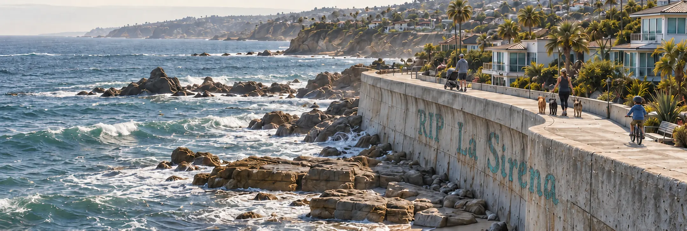
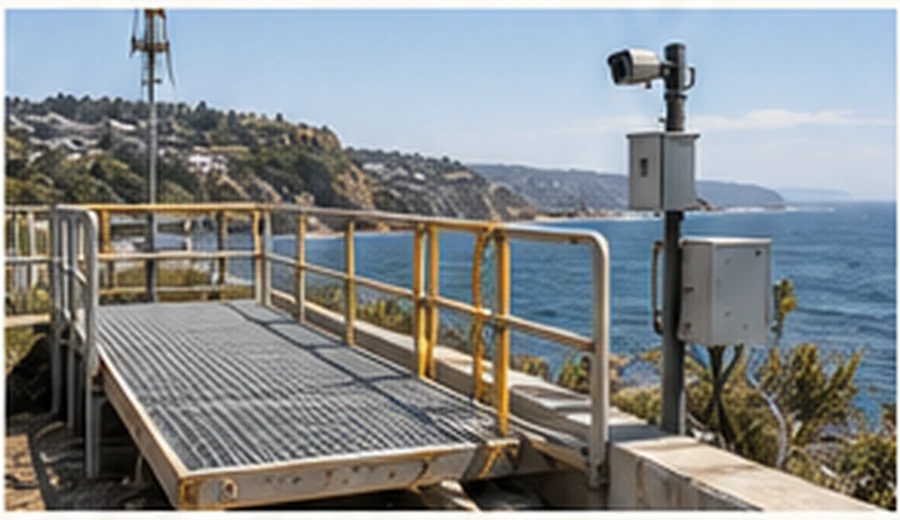
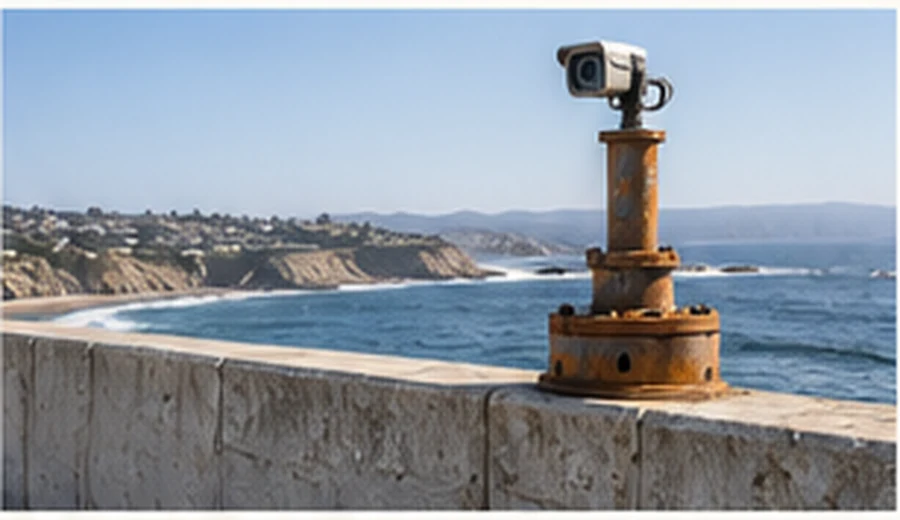

Tubular steel
After provenance review, cleaning and testing, suitable sections could be studied for piling, supports, protective frames or modular coastal structures.
Coastal inspection.
Circular materials.

Explore their next life
Understand today’s conditions above and below the waterline.
02Build a visual history of shoreline and structural change.
03Explore recovered materials for a stronger, more resilient coast.
Built from what the future left behind.
01 — Coastal inspection
A seawall rarely changes all at once. Cracks, drainage, displaced material, scour and movement often develop gradually.
SEEWALLE is developing a field-first inspection process for seawalls, revetments, drainage systems, bluff conditions and nearby infrastructure. Each visit creates a clear visual record that owners and qualified professionals can use to understand what deserves attention.
02 — Shoreline intelligence
Repeat photography and carefully placed cameras can show how a shoreline responds to seasons, storms and human activity.
Our proposed monitoring approach combines periodic site documentation with fixed observation points. Over time, computer vision may help flag shoreline movement, erosion zones and visible structural changes for human review.
Materials for a brighter coast
We are exploring how retired infrastructure can become useful again through careful recovery, testing and project-specific engineering.
Recovered offshore steel / concept studies
Decommissioned platforms contain heavy tubular steel, deck framing, grating, flanges and fittings designed for demanding marine environments.
After provenance review, cleaning and testing, suitable sections could be studied for piling, supports, protective frames or modular coastal structures.

Recovered deck systems could become inspection access, maintenance platforms or elevated paths where a project’s engineers determine they are appropriate.

Smaller recovered pieces could support cameras, environmental sensors, lighting or removable equipment stations.
Every proposed reuse begins with cleaning, material identification, corrosion and fatigue assessment, and engineering for the specific site. These images show areas of investigation rather than certified products.
Explore a materials partnershipRecovered solar
Retired panels and second-life battery systems may support monitoring equipment, cameras and off-grid communications after appropriate electrical and safety evaluation.
Our proposed process starts with identifying usable equipment, checking its condition and matching its remaining capacity to a specific monitoring need. Damaged or unsuitable components follow an appropriate recycling route.
Ask about second-life energy →5G cell towers
Recovered 5G cell-tower assemblies can include lattice sections, antenna brackets, cabinets and mounting hardware. We are exploring how suitable components might support coastal cameras, environmental sensors and other engineered installations.
Each component would be assessed individually. A retired antenna and a load-bearing tower member have different reuse requirements; material condition, compatibility and intended duty determine the next step.
Discuss 5G tower recovery →Wind components
Tower sections, hubs, flanges and composite blades create opportunities for research into structural forms, protective elements and durable public infrastructure.
Metal and composite parts require different recovery approaches. Our concept studies focus on identifying useful geometries and materials, documenting their condition, and evaluating them for a defined application.
Discuss wind-material recovery →Begin a conversation
Tell us about a coastal property, recovered-material stream or partnership idea. The first conversation is a practical way to determine whether SEEWALLE is a fit.
Materials research, development and fabrication coordination.
Coastal consultations and project coordination by appointment.